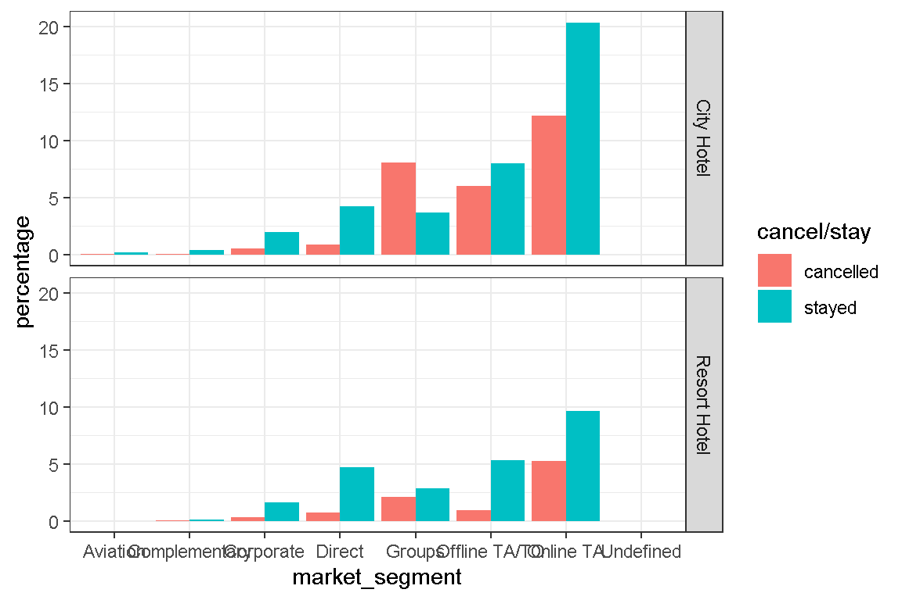
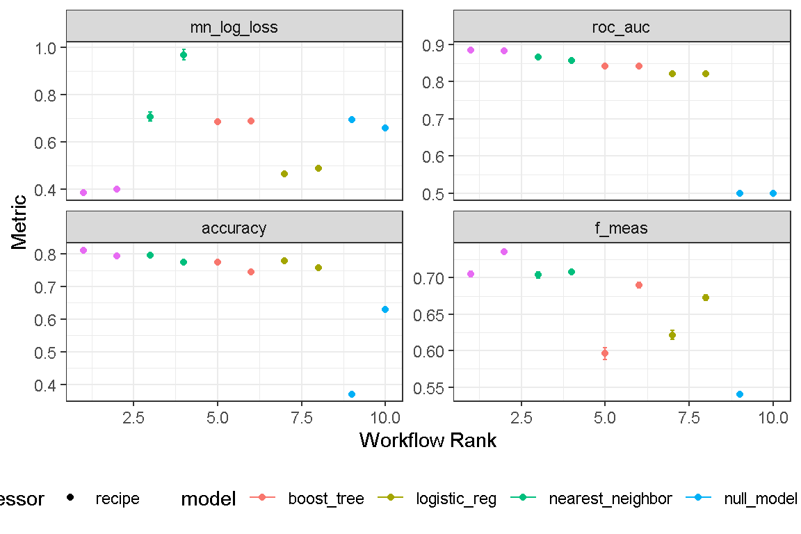

Introduction
I came across this dataset while reading Julia Silge’s blog. It’s a real treasure trove of information, especially for someone starting out in Machine Learning like me.
Detailed information on this dataset is available from this scientific paper. In her blog, Julia used the data to build a model that predicted which hotel stays included children, and which did not.
I decided to explore something different. One of the challenges every hotel faces is cancellations. Cancellations have a big impact on revenue management strategies, because it determines how aggressively a hotel could overbook it’s inventory of rooms.
rm(list = ls())
sessionInfo()
# Set packages and dependencies
pacman::p_load("tidyverse", #for tidy data science practice
"tidymodels", "workflows", "finetune", "themis", "embed",# for tidy machine learning
"pacman", #package manager
"devtools", #developer tools
"Hmisc", "skimr", "broom", "modelr",#for EDA
"jtools", "huxtable", "interactions", # for EDA
"ggthemes", "ggstatsplot", "GGally",
"scales", "gridExtra", "patchwork", "ggalt", "vip",
"ggstance", "ggfortify", # for ggplot
"DT", "plotly", #interactive Data Viz
# Lets install some ML related packages that will help tidymodels::
"usemodels", "poissonreg", "agua", "sparklyr", "dials",#load computational engines
"doParallel", # for parallel processing (speedy computation)
"ranger", "xgboost", "glmnet", "kknn", "earth", "klaR", "discrim", "naivebayes", "baguette", "kernlab",#random forest
"janitor", "lubridate")
load("hotel_cancellation_data.RData")Importing the data
We start by importing the data, and do a quick summary of it using skim. Once again, I am also importing hotel_cancellation_data.RData and setting eval = FALSE for many of the code chunks to reduce the computational resources and time required to render this page.
df <- read_csv("https://raw.githubusercontent.com/rfordatascience/tidytuesday/master/data/2020/2020-02-11/hotels.csv")
skim(df)Data Wrangling
I’m still a bit confused as to whether to handle the data wrangling “here”, or at the recipe stage. Recall that there are numerous step_* functions to perform similar tasks as dplyr. I will make a note to ask Prof at our class next week.
For now, I’ll use mutate and dmy() from lubridate to get the arrival date, as well as mutate is_canceled and other character predictors into factors.
#lets get variables into correct class
data <-
df %>%
janitor::clean_names() %>%
mutate(arrival_date = dmy(paste0(arrival_date_day_of_month, "-", arrival_date_month, "-", arrival_date_year)),
#day_of_week = factor(wday(arrival_date, label = TRUE)),
is_canceled = factor(ifelse(is_canceled == 0, "stayed", "cancelled")),
is_repeated_guest = factor(ifelse(is_repeated_guest == 0, "first-time", "repeat")),
children = children + babies) %>%
dplyr::select(-babies) %>%
mutate_if(is.character, as.factor)EDA
Let’s perform some basic EDA. First, let’s see what proportion of reservations are cancelled.
The City Hotel has a higher proportion of cancellations compared to the Resort Hotel, 41.7 percent vs 27.8 percent.
Do cancellations vary by market segment? Let’s investigate that.
data %>%
dplyr::select(hotel, market_segment, is_canceled) %>%
group_by(hotel, market_segment) %>%
count(is_canceled) %>%
mutate(percentage = n / length(data$hotel) *100) %>%
ggplot(aes(x = market_segment,
y = percentage,
fill = is_canceled)
) +
geom_col(position = "dodge") +
facet_grid(hotel~.)+
labs(fill = "cancel/stay") +
theme(legend.position = "bottom",
axis.text.x = element_text(size = rel(0.5))) +
theme_bw()
Finally, let’s look at the proportion of reservations that are cancelled vs not cancelled to check for class imbalance.
data %>%
count(is_canceled)Do we need to address class imbalance? Let’s use step_upsample in one recipe to address class imbalance, and another recipe without to compare its performance.
What to do if I have no ML?
Assuming I am the City Hotel operator with no access to ML (or no knowledge of machine learning), I’d pay more attention to market segments with the highest cancellation rates, which are Groups and Online TA. I could proactively send out reminders to reconfirm reservations as the date of stay approaches. I could also “tighten-up” cancellation policies by imposing penalties if you cancel within 14 days of the intended date of stay.
These are very common cancellation policies which we currently see in practice. A riskier approach would be to allow particular segments with higher cancellation rates to overbook rooms, but this would come at the risk of “walking the guest” should cancellations not materialize.
I wonder if my rudimentary Machine Learning algorithm can do a better job?
Correlation check
None of the numeric predictors appear to be highly correlated with each other.
Splitting the Data
As Julie Silge would call it, here is where we decide how to spend our “data budget”. A word of caution here for those with incompetent hardware. The dataset is considered “large” with respect to the laptop I have, which is a “hand me down” gaming rig I inherited from my son, originally purchased in 2017.
This machine “cannot” handle model fitting and tuning for a dataset of this size. It would either hang, or the task would be incomplete even after 48 hours. Previously, while I contemplated investing in an upgraded computer, I did the next best thing, which was to work on a smaller sample of the original data (10 percent to be precise). I used sample_frac() to randomly sample 10 percent of the data, which was a reasonable size to work on.
I always suspected that the above wasn’t the best solution. Hence, as my learning progressed, I learnt about implementing “racing methods” of tuning using the finetune package. I came back and updated this post by implementing racing.
set.seed(2024012901)
data_split <-
data %>%
#dplyr::sample_frac(size = 0.1, replace = FALSE) %>% #use 10% of data due to lack of computing power
dplyr::select(hotel, is_canceled, arrival_date,
market_segment, distribution_channel, reserved_room_type,
deposit_type, customer_type, lead_time, is_repeated_guest,
previous_cancellations, previous_bookings_not_canceled, booking_changes,
days_in_waiting_list, adr) %>%
filter(adr >=0, adr < 4000) %>% #remove negative adr and outlier
initial_split(strata = is_canceled)
data_train <-
data_split %>%
training()
data_test <-
data_split %>%
testing()
data_fold <-
data_train %>%
vfold_cv(v = 10, strata = is_canceled)Create recipes
I created two recipes to accommodate the models which I explored.
base_rec <-
recipes::recipe(formula = is_canceled ~.,
data = data_train) %>%
step_zv(all_predictors()) %>% # remove zero variance
# make new features with date
step_date(arrival_date, features = c("dow", "month", "year"), role = "predictors") %>%
update_role(arrival_date, new_role = "date") %>%
step_YeoJohnson(all_numeric_predictors()) %>%
step_normalize(all_numeric_predictors()) %>%
step_dummy(all_nominal_predictors())
upsample_rec <-
recipes::recipe(formula = is_canceled ~.,
data = data_train) %>%
step_zv(all_predictors()) %>% # remove zero variance
step_upsample(is_canceled) %>%
# make new features with date
step_date(arrival_date, features = c("dow", "month", "year"), role = "predictors") %>%
update_role(arrival_date, new_role = "date") %>%
step_YeoJohnson(all_numeric_predictors()) %>%
step_normalize(all_numeric_predictors()) %>%
step_dummy(all_nominal_predictors())Build Models
I explored 7 models for predicting whether a reservation would be canceled or not. This is a classification problem. The models were random forest (using ranger), classification decision tress (using rpart), k-nearest neighbor (using kknn), xgboost (using xgboost), naive bayes (using naivebayes), logistic regression (using glm) and logistic LASSO regression (using glmnet). I considered models using their preset default, as well as tuned hyper-parameters.
** Revision on 26 Feb 2024, I decided to narrow down my models to only 4 models: random forest, xgboost, k-nearest neighbor, and logistic regression. I’ve also included a base null model to provide a baseline comparison.
# random forest
rf_spec <-
rand_forest() %>%
set_engine("ranger",
importance = "impurity") %>%
set_mode("classification")
rf_spec_for_tuning <-
rf_spec %>%
set_args(trees = tune(),
mtry = tune(),
min_n = tune())
# knn
knn_spec <-
nearest_neighbor() %>%
set_engine("kknn") %>%
set_mode("classification")
knn_spec_for_tuning <-
knn_spec %>%
set_args(neighbors = tune(),
weight_func = tune(),
dist_power = tune())
# xgboost
xgb_spec <-
boost_tree() %>%
set_engine("xgboost") %>%
set_mode("classification")
xgb_spec_for_tuning <-
xgb_spec %>%
set_args(tree_depth = tune(),
min_n = tune(),
loss_reduction = tune(),
sample_size = tune(),
mtry = tune(),
learn_rate = tune())
# Logistic Regression Model
logistic_spec <-
logistic_reg() %>%
set_engine(engine = 'glm') %>%
set_mode('classification')
null_spec <-
null_model() %>%
set_mode("classification") %>%
set_engine("parsnip")I created 1 workflowset to accommodate the 2 recipes and 5 models. Its a good way to try-out multiple sets of recipe and model approaches together, and tune them at once. And, it works with tune_race_anova!
Tuning with racing using workflow_map
Thus far, working with workflow_set and workflow_map have made testing various recipe/workflow combinations quite easy. I fitted the workflow_set to the validation set data_fold and tuned hyper-parameters using tune_race_anova.
# tune hyper parameters
set.seed(2024020102)
doParallel::registerDoParallel(cl=15, cores = 30)
racing_results <-
workflow_map(base_set,
fn = "tune_race_anova",
resamples = data_fold,
grid = c(3:10),
metrics = metric_set(roc_auc, f_meas, accuracy, mn_log_loss),
control = control_race(verbose = TRUE,
verbose_elim = TRUE,
allow_par = TRUE,
save_workflow = TRUE,
parallel_over = "everything"))
save(racing_results, file = "racing_results.Rda")It took my laptop approximately 36 hours to complete the above tuning process - I had expected it to be faster. :(
You can visualize the results using an autoplot() as well as rank the best recipe/workflow combination using rank_results. We will use roc_auc as the metric to evaluate model performance.
autoplot(racing_results) + theme_bw() + theme(legend.position = "bottom")
# rank results
racing_results %>%
workflowsets::rank_results(rank_metric = "roc_auc") %>%
filter(.metric == "roc_auc") %>%
dplyr::select(wflow_id, mean, std_err, rank) %>%
datatable() %>%
formatRound(columns = c("mean", "std_err"),
digits = 3)The top performing model is the random forest model, using the basic recipe. Let’s extract the “winning” workflow and see what tuned parameters were selected. Upsampling did not provide better perfoemance.
rf_tuned_parameters <-
racing_results %>%
extract_workflow_set_result(id = "basic_rand_forest") %>%
select_best(metric = "roc_auc")Finalize workflow and last fit
With the tuned parameters, we can “apply” it to be best performing workflow and fit it to data_split using finalize_workflow and last_fit respectively.
# finalize workflow
base_rf_wflow <-
workflow() %>%
add_recipe(base_rec) %>%
add_model(rf_spec_for_tuning) %>%
finalize_workflow(rf_tuned_parameters)
# last fit
base_rf_final_fit <-
base_rf_wflow %>%
last_fit(data_split)Assessing the workflow
With the final fitted workflow, we can obtain metrics for model performance using collect_metrics.
results_base_rf <-
base_rf_final_fit %>%
collect_metrics() %>%
mutate(algo = "Base Recipe Random Forest")The results are quite promising, with an roc_auc of 0.884.
We can also obtain a confusion matrix, which compares predictions vs truth for the whole dataset. This is a 2 by 2 matrix that compares stayed/cancelled reservations for truth vs prediction.
base_rf_final_fit %>%
collect_predictions %>%
conf_mat(is_canceled, .pred_class) Truth
Prediction cancelled stayed
cancelled 6795 1373
stayed 4261 17419This matrix can also be visualized as a plot:
base_rf_final_fit %>%
collect_predictions %>%
conf_mat(is_canceled, .pred_class) %>%
autoplot() +
theme_bw()We can also use autoplot to visualize the roc_curve.
base_rf_final_fit %>%
collect_predictions %>%
roc_curve(is_canceled, .pred_cancelled) %>%
autoplot()And finally, we can use VIP to visualize which were the most important features in the model.
base_rf_final_fit %>%
extract_fit_parsnip() %>%
vip(geom = "point") +
theme_bw()
The top 3 features determining cancellations are non-refundable deposit, lead-time, and adr.
#save.image("hotel_cancellation_data.RData")Thank you for reading this post to the end.
Material added 28 February 2024
I learnt about Principal Component Analysis (PCA) over the weekend, and I would like to see if implementing it as a recipe step would help improve our results. Let’ go!
Explore PCA using step_pca
We start by making a new recipe pca_rec.
# make a recipe for pca
pca_rec <-
recipes::recipe(formula = is_canceled ~.,
data = data_train) %>%
step_zv(all_predictors()) %>% # remove zero variance
# make new features with date
step_date(arrival_date, features = c("dow", "month", "year"), role = "predictors") %>%
update_role(arrival_date, new_role = "date") %>%
step_YeoJohnson(all_numeric_predictors()) %>%
step_dummy(all_nominal_predictors()) %>%
step_normalize(all_numeric_predictors()) %>%
step_pca(all_predictors())Since we are only evaluating 1 model and 1 recipe, I will only need to create a workflow.
pca_rf_wflow <-
workflow() %>%
add_recipe(pca_rec) %>%
add_model(rf_spec_for_tuning)Let’s tune it with racing.
set.seed(2024022801)
doParallel::registerDoParallel(cl=15, cores = 30)
pca_rf_results <-
tune_race_anova(
pca_rf_wflow,
data_fold,
grid = c(4:10),
metrics = metric_set(roc_auc, f_meas, accuracy, mn_log_loss),
control = control_race(verbose = TRUE,
verbose_elim = TRUE,
allow_par = TRUE,
save_pred = TRUE,
parallel_over = "everything")
)
save(pca_rf_results, file = "pca_rf_results.Rda")Once tuning is done, lets finalize the tuned hyper-parameters to the workflow and fit to data_split.
pca_rf_tuned_wflow <-
pca_rf_wflow %>%
finalize_workflow(pca_rf_results %>% select_best(metric = "roc_auc"))
pca_rf_final_fit <-
pca_rf_tuned_wflow %>%
last_fit(data_split)
results_pca_rf <-
pca_rf_final_fit %>%
collect_metrics() %>%
mutate(algo = "PCA Recipe Random Forest")Unfortunately, roc_auc did not improve using PCA. Shall we explore if there are any interactions between numeric variables? Let’s do it.
A recipe for interactions
# make a recipe for interactions
base_inter_rec <-
recipes::recipe(formula = is_canceled ~.,
data = data_train) %>%
step_zv(all_predictors()) %>% # remove zero variance
# make new features with date
step_date(arrival_date, features = c("dow", "month", "year"), role = "predictors") %>%
update_role(arrival_date, new_role = "date") %>%
step_YeoJohnson(all_numeric_predictors()) %>%
step_normalize(all_numeric_predictors()) %>%
step_interact(terms = ~ all_numeric_predictors():all_numeric_predictors(),
role = "predictor") %>%
step_dummy(all_nominal_predictors())
#base_inter_rec %>% prep() %>% juice() %>% skim()
base_inter_rf_wflow <-
workflow() %>%
add_recipe(base_inter_rec) %>%
add_model(rf_spec_for_tuning)
set.seed(2024022802)
doParallel::registerDoParallel(cl=15, cores = 30)
base_inter_rf_results <-
tune_race_anova(base_inter_rf_wflow,
data_fold,
grid = c(4:10),
metrics = metric_set(roc_auc, f_meas, accuracy, mn_log_loss),
control = control_race(verbose = TRUE,
verbose_elim = TRUE,
allow_par = TRUE,
save_pred = TRUE,
parallel_over = "everything")
)
save(base_inter_rf_results, file = "base_inter_rf_results.Rda")
base_inter_rf_tuned_wflow <-
base_inter_rf_wflow %>%
finalize_workflow(base_inter_rf_results %>% select_best(metric = "roc_auc"))
base_inter_rf_final_fit <-
base_inter_rf_tuned_wflow %>%
last_fit(data_split)
results_interact_rf <-
base_inter_rf_final_fit %>%
collect_metrics() %>%
mutate(algo = "Base Interact Random Forest")The performance was better than using the PCA Random Forest combination, but did not exceed using the simpler Base Random Forest.
Here is a summary of the results. As my knowledge of machine learning improves, I might come back and try out new feature engineering techniques to improve model performance. For now, I shall conclude here.
results <-
bind_rows(results_base_rf, results_pca_rf, results_interact_rf) %>%
dplyr::select(.metric, .estimate, algo) %>%
group_by(.metric) %>%
arrange(desc(.estimate)) %>%
datatable() %>%
formatRound(columns = ".estimate",
digits = 3,
)
resultsAdded tune_sim_anneal 6 March 2024
Learnt about iterative tuning, so I decided to try it out. I wonder if it will result in better model performance?
# base recipe and rf workflow
base_rf_wflow2 <-
workflow() %>%
add_model(rf_spec_for_tuning) %>%
add_recipe(base_rec)
# set up new search grid
rf_grid <-
extract_parameter_set_dials(rf_spec_for_tuning) %>%
update(trees = trees(c(100L,1500L)),
mtry = mtry(c(5L,100L)),
min_n = min_n(c(5L,100L)
)
)
rf_metrics <-
metric_set(roc_auc, f_meas, accuracy, mn_log_loss)
# tune_sim_anneal
set.seed(2024040301)
doParallel::registerDoParallel(cl=15, cores = 30)
base_rf_sim_anneal_result <-
tune_sim_anneal(
object = base_rf_wflow2,
resamples = data_fold,
iter = 25,
metrics = rf_metrics,
param_info = rf_grid,
initial = 1,
control = control_sim_anneal(verbose = TRUE,
verbose_iter = TRUE,
allow_par = TRUE,
parallel_over = "everything")
)
save(base_rf_sim_anneal_result, file = "base_rf_sim_anneal_result.Rda")
base_rf_sim_anneal_tuned_wflow <-
base_rf_wflow2 %>%
finalize_workflow(base_rf_sim_anneal_result %>% select_best(metric = "roc_auc"))
base_rf_sim_anneal_final_fit <-
base_rf_sim_anneal_tuned_wflow %>%
last_fit(data_split)
results_base_rf_sim_anneal <-
base_rf_sim_anneal_final_fit %>%
collect_metrics() %>%
mutate(algo = "Base RF Sim Anneal")
results2 <-
bind_rows(results_base_rf, results_pca_rf, results_interact_rf, results_base_rf_sim_anneal) %>%
dplyr::select(.metric, .estimate, algo) %>%
group_by(.metric) %>%
arrange(desc(.estimate)) %>%
datatable() %>%
formatRound(columns = ".estimate",
digits = 3,
)results2